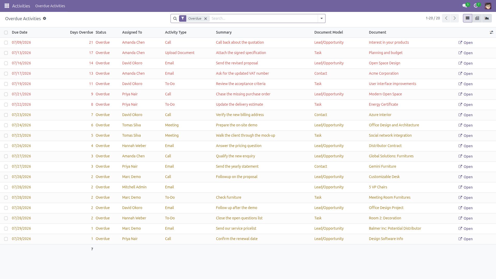
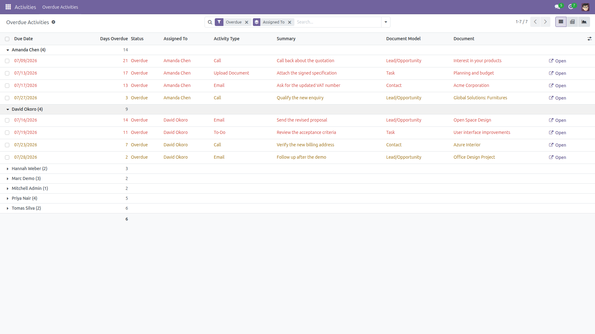
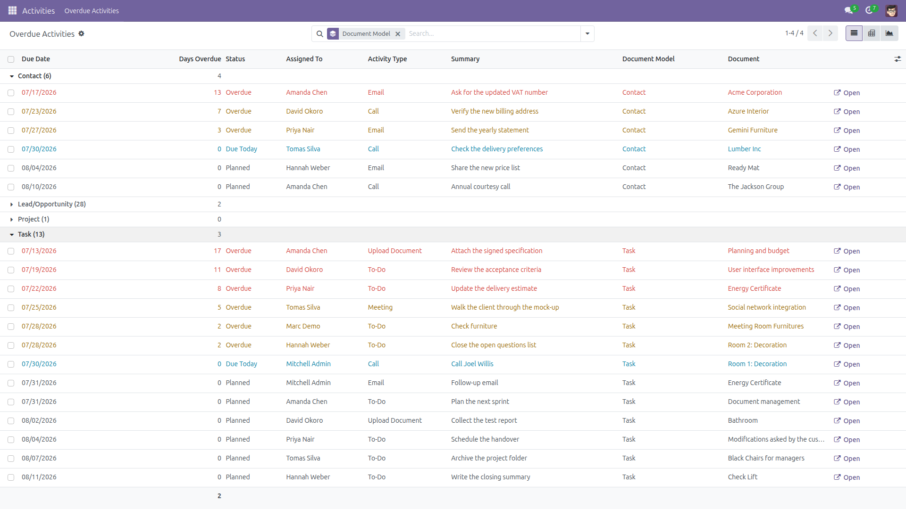
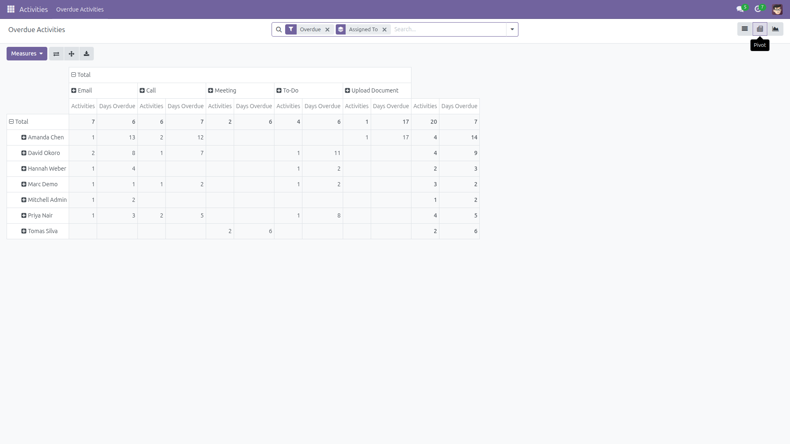
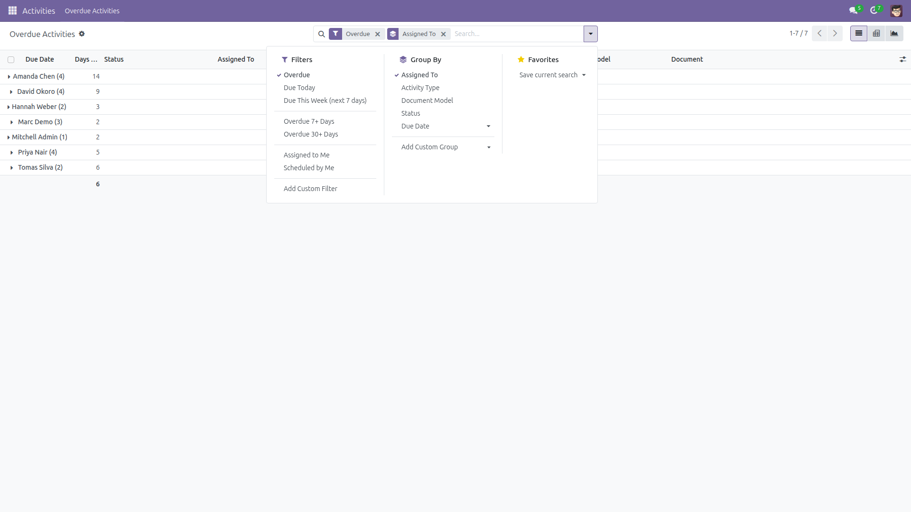

Overdue Activities Report
Who is late, on which document, and by how many days
Odoo shows each user their own late activities in the systray, and each document its own activity list. There is no single place where a team leader can see what the whole team is late on. This module adds that place: a read-only report with one row per open activity, across every model that uses activities.
Free and open source (LGPL-3), Odoo 14.0 through 19.0.
- One row per open activity — assignee, activity type, summary, document model, live document name, due date and days overdue.
- Days Overdue as a real column — sort on it, filter on it, average it per group, export it.
- An Open button on every row — jump straight to the lead, task, invoice or contact the activity belongs to.
- Filters that answer real questions — Overdue, Due Today, Due This Week (next 7 days), Overdue 7+ Days, Overdue 30+ Days, Assigned to Me, Scheduled by Me, plus a free “overdue by at least N days” input.
- Group by assignee, activity type, document model, status or due date.
- Pivot and graph views — two measures, Activities (a count, for charting workload) and Days Overdue (averaged), so you can chart the backlog per person and per type.
- Respects your access rights — the module never runs as superuser and never widens what you can already see. Read How visibility works below for the exact rule.
- Read-only — a database view over open activities. No activity, no document and no user is ever modified.
Screenshots

Every open activity that is late, most overdue first — across leads, tasks and contacts in one list, with the live document name and an Open button.

Grouped by assignee — how many late activities each person carries, and their average days overdue.

Grouped by document model — which part of the business is behind. Overdue, due today and planned activities are colour-coded.

The pivot view: assignees in rows, activity types in columns, Activities and Days Overdue as measures.

The shipped filters and group-by options.
How visibility works
A row is shown to you when either the activity is assigned to you, or you are allowed to read the document the activity is attached to. The report re-checks the access rights and record rules of every underlying document, with one query per model — it never runs as superuser and never widens what you can already see.
- That second rule is what lets a manager see the team: if you can read the leads, the invoices or the tickets, you see the late activities on them.
- The first rule is the same exception Odoo itself applies to activities: one assigned to you is always visible to you, even if you cannot open the document behind it.
- Access to the report is granted to every internal user (group Employee); what each of them actually sees is decided per row by the rules above.
- An activity whose document was deleted can no longer be checked against anything, so it stays visible only to the person it is assigned to. It is labelled Deleted record, and its Open button reports a clear error instead of crashing.
- A row you see only because of the first rule carries no document link, because you are not allowed to open the document behind it — the Open button says so rather than failing with an access error.
Limits, stated plainly
- Only open activities are reported. One that was marked done or cancelled never appears — Odoo deletes it, or (on the versions that keep done activities) archives it, and the report excludes archived rows. This is not a done-activity history.
- Days Overdue is counted in whole days against the current UTC date, the same reference Odoo uses for activity deadlines.
- The Document Name (recorded) column is the name Odoo stored on the activity when it was created and is not refreshed on rename; the Document column always shows the live name.
- The per-document visibility check examines at most 20,000 candidate rows per query. Above that backlog the check is truncated fail-closed: row lists, record counts, group totals and pivot measures can all come out lower than reality — never higher — and a warning is written to the server log. Narrow the filter (for example Overdue 7+ Days) to get exact numbers.
Installation
- Copy the module into your addons path, or install it from the Apps list.
- Open Apps, click Update Apps List, search for Overdue Activities Report and click Install.
- The only dependency is the standard
mail module, which is already installed on every Odoo database.
Configuration
- No configuration is needed — there are no settings and no scheduled action.
- Access is granted to the Employee group on install; the per-document visibility rules above then decide what each user sees.
- To narrow that further, edit the access line for
activity.overdue.report in Settings → Technical → Security → Access Rights (developer mode) and point it at your own group.
Usage
- Go to Activities → Overdue Activities.
- The list opens filtered on Overdue and grouped by Assigned To, so you see immediately who is behind and by how much.
- Use Document Model in the Group By menu to see which part of the business is late, or the Overdue 30+ Days filter to isolate what has been ignored longest.
- Click Open on a row to jump to the document and deal with the activity there — the report itself never changes anything.
- Switch to the pivot or graph view to chart workload, or select all and Export the list to a spreadsheet.
Support
Questions, bug reports and feature requests are welcome at
f.ashraf.dev1@gmail.com.
Author: Farhan Ashraf — github.com/faaani/odoo-apps. Licence: LGPL-3.